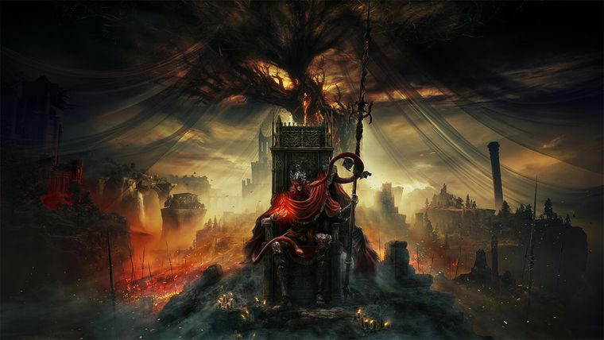
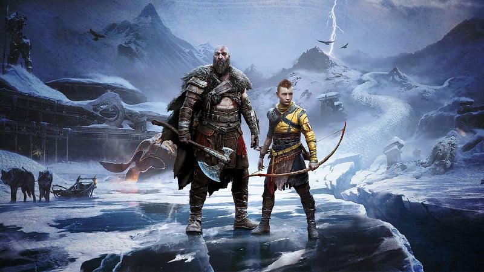
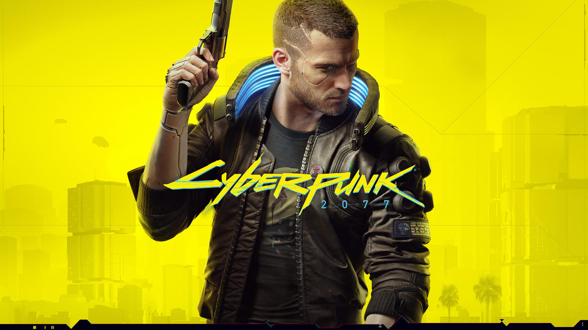

01
Elden Ring
FromSoftware · 2022 · Open World Action RPG
9.6
Tổng hợp chi tiết các tựa game AAA xuất sắc nhất. Phân tích gameplay, cốt truyện, đồ họa và trải nghiệm tổng thể.

9.6 / 10
Dựa trên đánh giá tổng hợp về gameplay, cốt truyện và trải nghiệm.
FromSoftware · 2022 · Open World Action RPG

Santa Monica Studio · 2022 · Action Adventure
Rockstar Games · 2018 · Open World
CD Projekt Red · 2015 · Action RPG

CD Projekt Red · 2020 · Open World RPG
Elden Ring kết hợp hoàn hảo giữa công thức Souls kinh điển và thế giới mở rộng lớn. The Lands Between là một trong những map đẹp và đáng khám phá nhất trong lịch sử game, với từng góc nhỏ đều chứa bí mật, boss hoặc lore thú vị.
Gameplay vẫn giữ độ khó cao đặc trưng của FromSoftware nhưng hệ thống Ash of War và Spirit Summons giúp người chơi linh hoạt hơn. Đồ họa và atmosphere tuyệt vời, đặc biệt là thiết kế boss và ánh sáng. Đây là game mà cả người mới và fan cứng đều có thể tận hưởng theo cách riêng.
Phần tiếp theo của God of War 2018 tiếp tục kể câu chuyện về Kratos và Atreus trong thế giới Bắc Âu. Combat được cải tiến mượt mà hơn, với nhiều vũ khí và kỹ năng mới. Đồ họa trên PS5 đạt mức đỉnh cao, đặc biệt là hiệu ứng tuyết, ánh sáng và biểu cảm nhân vật.
Điểm mạnh lớn nhất vẫn là cốt truyện và mối quan hệ cha con. Các nhân vật phụ được khai thác sâu, và cái kết vừa thỏa mãn vừa để lại dư vị. Một trong những game narrative hay nhất thế hệ.
RDR2 xây dựng một thế giới miền Tây Mỹ cuối thế kỷ 19 cực kỳ chi tiết. Từ cách nhân vật tương tác, hệ thống săn bắn, đến từng chi tiết nhỏ trong môi trường đều được chăm chút. Cốt truyện về Arthur Morgan và băng Van der Linde là một trong những narrative hay nhất ngành game.
Gameplay chậm rãi nhưng đầy chiều sâu. Nhiều người chơi dành hàng trăm giờ chỉ để khám phá và sống trong thế giới này. Dù đã ra mắt nhiều năm, game vẫn giữ được sức hút mạnh mẽ.
The Witcher 3 nổi tiếng với quest design xuất sắc. Hầu hết các nhiệm vụ phụ đều có cốt truyện riêng, lựa chọn và hậu quả rõ ràng. Thế giới Continent giàu lore, nhân vật đa chiều và hệ thống combat được cải thiện đáng kể ở bản Next-Gen.
Hai DLC Hearts of Stone và Blood and Wine còn được nhiều người đánh giá cao hơn cả game chính. Đây là game mà người chơi có thể dành hàng trăm giờ mà vẫn khám phá ra điều mới.
Sau nhiều bản vá và đặc biệt là bản cập nhật 2.0 cùng DLC Phantom Liberty, Cyberpunk 2077 đã trở thành một trải nghiệm đáng chơi. Night City là một trong những thành phố ảo đẹp và sống động nhất, với atmosphere cyberpunk cực mạnh.
Cốt truyện chính và các quest phụ chất lượng cao, hệ thống combat và progression được cải thiện rõ rệt. Dù ra mắt gặp nhiều vấn đề, phiên bản hiện tại xứng đáng là một trong những open-world RPG hay nhất những năm gần đây.
Trang được tạo bởi Hieu Minh nhằm tổng hợp đánh giá và xếp hạng các tựa game AAA nổi bật. Điểm số mang tính tham khảo dựa trên trải nghiệm chơi, đánh giá cộng đồng và các yếu tố gameplay, cốt truyện, đồ họa.
Mục tiêu là cung cấp cái nhìn nhanh nhưng đủ chi tiết để người chơi quyết định tựa game phù hợp với mình.
Bạn có ý kiến khác về bảng xếp hạng? Hãy chia sẻ.